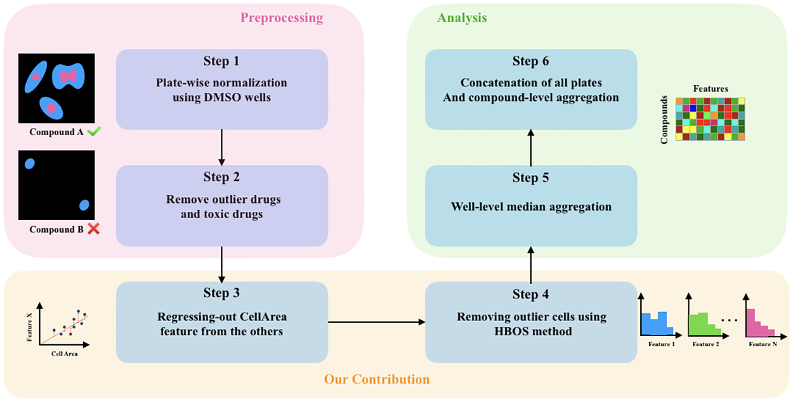
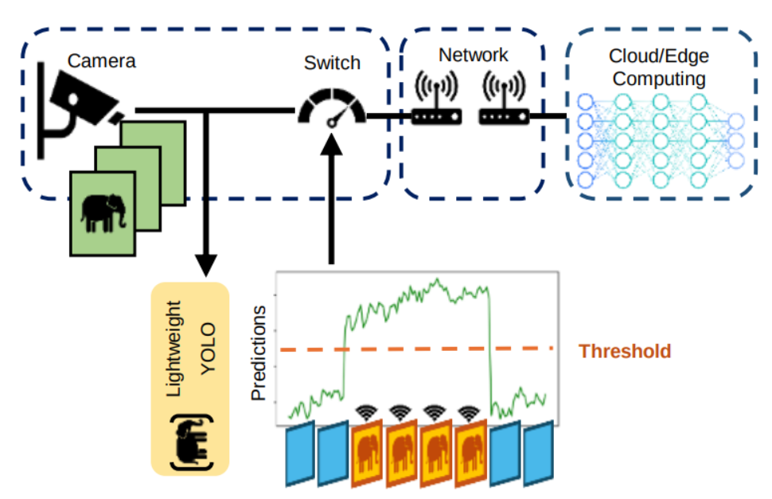

About Me
My name is Arghavan Rezvani, and I am currently pursuing a PhD in Computer Science at the University of California, Irvine, where I am working under the supervision of Professor Xiaohui Xie.
My primary research focus is on computer vision and deep learning, particularly their applications in medical image analysis.
Prior to this, I completed my bachelor’s degree in Computer Engineering at Sharif University of Technology, Tehran, Iran.
Selected Publications

Arghavan Rezvani*, Mahtab Bigverdi*, Mohammad Hossein Rohban
PLOS ONE Journal, 2022

Arghavan Rezvani*, Wenjun Huang*, Hanning Chen, Yang Ni,
Sanggeon Yun, Sungheon Jeong, Guangyi Zhang, Mohsen Imani
IEEE Sensors Journal, 2024
Experience
- Computer vision in medical image analysis
- Design and implementation of deep models for analysis of RGB and X-ray dental images.
- Under the supervision of Prof. Mohammad Hossein Rohban
- Image-based cell profiling enhancement via data cleaning methods
- Under the supervision of Prof. Ali Bashashati
- Conducted research on different aggregation methods in histopathology images